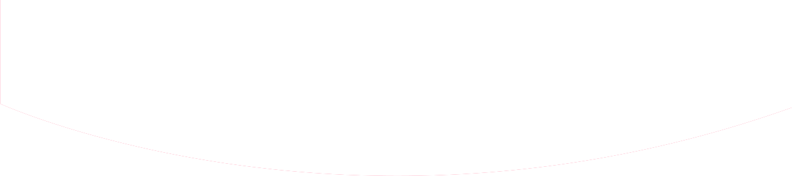

DISC 성격테스트 결과



성격유형 : 주도형(D) + 주도형(D)
동기요인 : 목적 성취
자기중심적
직선적
대담한
경쟁적
성격특징
- 높은 D형은 직관적인 현실 판단력과 결단력이 뛰어나며 높은 실천력을 갖고 있다
- 개인주의적 경향과 독립심이 강하다.
- 무뚝뚝하고 단도직입적이며, 간결하고 직선적인 말투를 구사한다.
- 직선적이고 강인한 행동을 하지만 그만큼 사람이나 상황을 빠르고 선명하게 다룰 수 있다.
- 강한 상남자 혹은 걸크러시가 있다면 바로 이 유형일 것이다.
- 대표적인 유명인은 이경규
단점
- 결과지향성과 리더쉽이 많지만 인간적 이슈에 별 관심이 없으며, 다른 사람의 마음을 이해하려는 노력이 부족하기 때문에 종종 무관심해 보이기도 한다.
조언
첫째, “내 마음대로 되지 않는 것도 있다”는 것을 받아들이자.
둘째, 타인의 말(조언)을 듣자!
성격테스트 하러가기